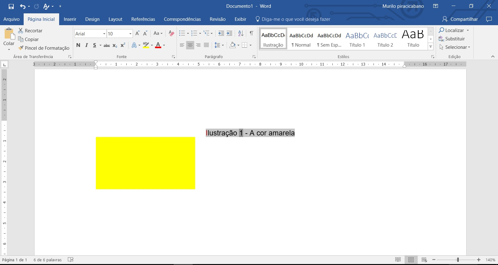
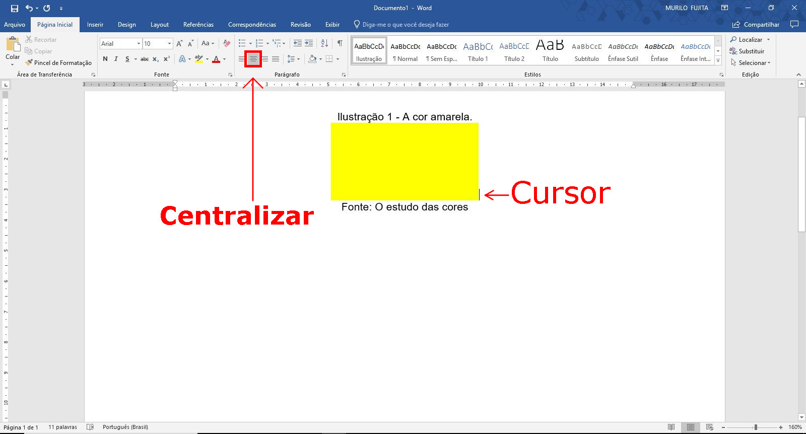
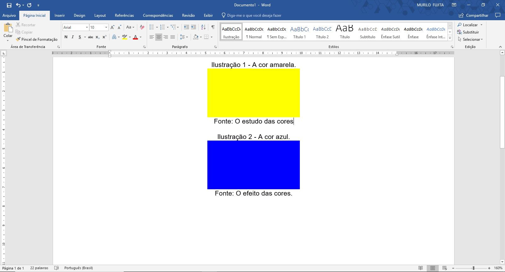
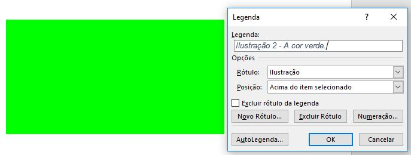

Terminada a etapa de configurações, inicia-se a parte das figuras e seus atributos.
No menu superior, clique em Inserir.
Clique em Imagens.
Veja a Figura 8.
Observação: também é possível copiar a figura e colar na posição desejada do Word.

Inicialmente, configura-se o estilo para atribuir à legenda da Ilustração.
Não há a opção Ilustração e deve criada da seguinte forma:
Clique na seta apontada pelo círculo vermelho da Figura 1.
Clique em Criar um Estilo como mostra a Figura 2.
Uma caixa de diálogo surge como mostra a Figura 3.
Altere o nome para Ilustração e clique no botão OK.
Resultado ao concluir a configuração do novo estilo chamado Ilustração.
Perceba que o primeiro estilo chama-se Ilustração.
Veja Figura 4.
Após a crição do estilo Ilustração, é necessário configurá-lo de acordo com as normas: fonte, tamanho, cor, espaçamento, etc.
Clique com o botão direito sobre o estilo Ilustração e selecione Modificar com o botão esquerdo.
Veja Figura 5.
Certifique-se que o estilo que está alterando tem o nome Ilustração (apontado pela seta vermelha).
O retângulo vermelho mostra a fonte atribuída ao estilo. Atenção: se você escolheu que a fonte do seu TCC é "Times New Roman", altere para esta fonte. Mantenha o padrão!
O retângulo amarelo mostra que a fonte deve ser de tamanho 10.
O retângulo verde configura para que o texto seja centralizado.
O retângulo azul configura para que o espaçamento entre linhas seja simples.
O retângulo laranja mostra o botão Formatar que abre uma lista e deve clicar em Parágrafo.
Verifique se as configurações do Parágrafo estão como as da Figura 7.
Terminada a etapa de configurações, inicia-se a parte das figuras e seus atributos.
No menu superior, clique em Inserir.
Clique em Imagens.
Veja a Figura 8.
Observação: também é possível copiar a figura e colar na posição desejada do Word.
Depois que a figura está inserida no seu texto, clique com o botão direito e selecione Inserir Legenda... como mostra a Figura 9.
O termo Figura foi substituído por Ilustração na norma. Como este termo não consta nas opções, será criado clicando em Novo Rótulo... representado pelo retãngulo de cor vermelha.
Surge outra caixa de diálogo com o título "Novo nome".
Atribua o nome Ilustração indicado pela seta.
Veja Figura 10.
A seta que está mais acima mostra que a texto mudou de Figura 1 para Ilustração 1.
Pressione espaço, coloque um travessão, pressione espaço e escreva o texto descritivo da sua figura.
A seta mais abaixo aponta para a posição que deve estar selecionado "Acima do item selecionado".
Veja Figura 11.
Com o mouse selecione todo texto da legenda.
Veja Figura 12.
Clique em Ilustração da galeria de estilo (retângulo vermelho).
Veja Figura 13.
O procedimento a seguir refere-se a exigência de citar a fonte consultada.
Posicione o cursor abaixo da figura e escreva a fonte.
Em seguida selecione a descrição com o mouse e clique no estilo Ilustração.
Posicione o cursor ao lado da figura e centralize clicando como mostra a seta.
Veja a Figura 14.
Insira uma figura abaixo da primeira e configure tanto a legenda como a fonte.
Veja a Figura 15.
Surge a necessidade de inserir uma figura entre as duas anteriores como a que será representada por um retângulo verde.
Clique com o botão direito sobre a figura e selecione Inserir Legenda...
Veja a Figura 16.

Adicione o seu texto descritivo para ser a legenda da sua figura.
Perceba que automaticamente a numeração apresentada foi 2 conforme a ordem que a figura aparece (Ilutração 2).
Veja Figura 17.
A figura 18 mostra o resultado final.
Conclusão: quando precisar inserir uma figura, basta inserir a legenda que a numeração será corrigida automaticamente.